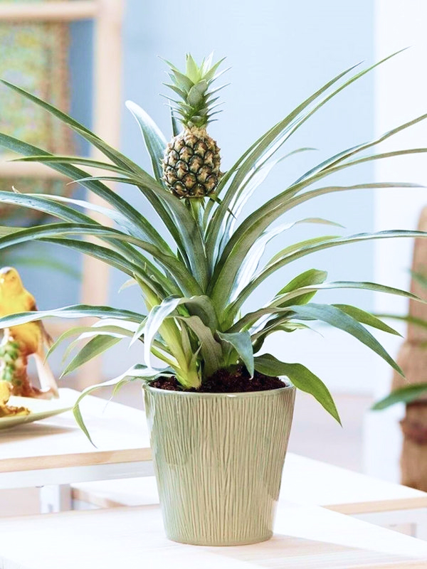
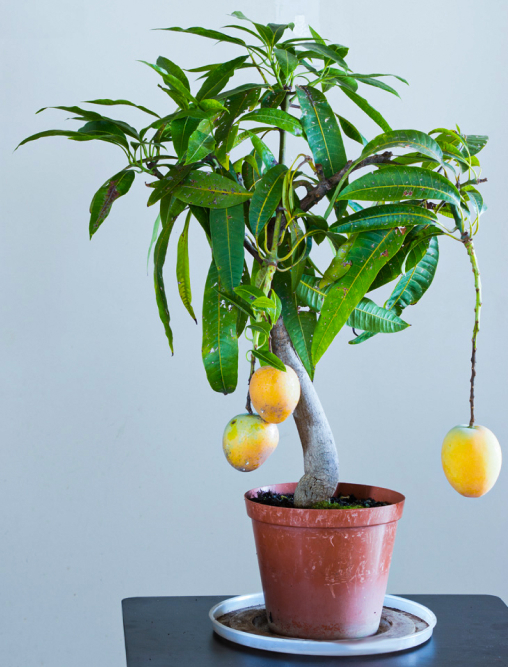

<section class="instruction__section"  id="tree">
    <div class="container">
        <div class="instruction__section-wrapper">
            <h2 class="instruction__title" data-aos="left">
                Теперь вы можете вырастить настоящие <br>
                полезные фрукты своими руками!
            </h2>
            <p class="instruction__text" data-aos="fade-left">
                Если вы хотите есть свои сочные натуральные фрукты <br>
                круглый год, то сажайте специальные гибридные семена <br>
                “Домашние деревья”.
            </p>
            <div class="instruction__block">
                <h3 class="instruction__block-title" data-aos="fade-left" data-aos-delay="200">
                    Как выращивать? 3 простых действия!
                </h3>
                <h4 class="instruction__block-step"  data-aos="fade-left" data-aos-delay="300">
                    Шаг №1
                </h4>
                <p class="instruction__block-text"  data-aos="fade-left" data-aos-delay="300">
                    Вскройте упаковку с семенами и высадите их согласно инструкции в заранее приготовленный грунт. Мини-деревья "Домашние деревья" склонны
                    очень быстро расти, поэтому заранее продумайте место для роста и цветения.
                </p>
                <h4 class="instruction__block-step"  data-aos="fade-left" data-aos-delay="400">
                    Шаг №2
                </h4>
                <p class="instruction__block-text"  data-aos="fade-left" data-aos-delay="400">
                    Следите за стабильным температурным режимом и умеренным поливом (поливать по мере подсыхания почвы).
                </p>
                <h4 class="instruction__block-step"  data-aos="fade-left" data-aos-delay="500">
                    Шаг №3
                </h4>
                <p class="instruction__block-text"  data-aos="fade-left" data-aos-delay="500">
                    Соберите первый урожай уже через три месяца после посадки семян “Домашние деревья”!
                </p>
            </div>
            <div class="instruction__decor">
                <div class="instruction__img instruction__img-1">
                    
                </div>
                <div class="instruction__img instruction__img-2">
                    
                </div>
            </div>
        </div>
    </div>
</section>